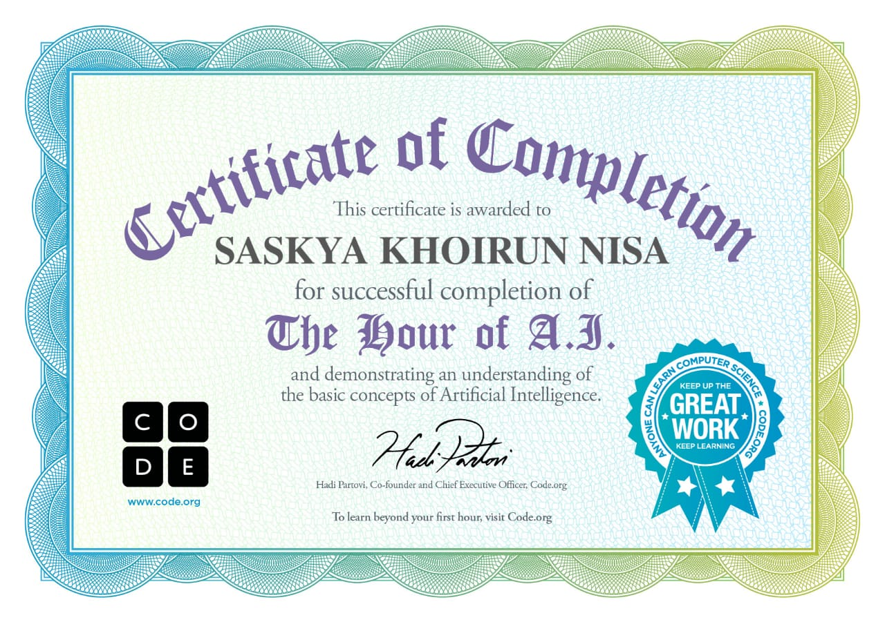

<!DOCTYPE html>
<html lang="en">
  <title>Sound di HTML</title>
</head>
<body>
  <audio controls>
    <source src="Sound horeg.mp3" type="audio/mpeg">
  </audio>
</body>
</html>
<head>
   <meta name="viewport" content="width=device-width, initial-scale=1.0">
   <meta http-equiv="X-UA-Compatible" content="ie=edge">
   <title>suki</title>
   <link rel="stylesheet" href="Sas.css">
</head>
</body>
<video autoplay muted loop id="bg-video">
  <source src="Sas.mp4" type="video/mp4">
  </video>
  </div>
  <body>  
 <title>MAKALAH
DAMPAK POSITIF DAN NEGATIF PENGGUNAAN 
HANDPHONE PADA KESEHATAN 
MENTAL</title>

</head>
<body>
  <div class="halaman">
    <center>
  ini punya little girl👉👈🥺  
  
   <h1>MAKALAH</h1>
    <h2>TENTANG PENGARUH PENGGUNAAN HANDPHONE BAGI PELAJAR DAN REMAJA</h2>     </center>
    
    <center>    
    <p><b>Nama:</b>SASKYA KHOIRUN NISA</p>
    <p><b>Kelas:</b> XIB</p>
    <p><b>Sekolah:</b> SMK al mabrur</p>
    <p><b>Tahun:</b> 2025</p>
  </div>
  </center>
  <div class="halaman">
    <center>
      <h3>KATA PENGANTAR</h3>
    <p>Puji syukur penulis ucapkan kehadirat Tuhan Yang Maha Esa karena berkat rahmat-Nya karya tulis ilmiah ini dapat penulis selesaikan sesuai dengan waktu yang telah ditentukan,dalam ini ,penkarya tulis ilmiah membahas mengenai “pengaruh penggunaan handphone bagi pelajar dan remaja”
    </p>
    <p>Karya tulis ini dibuat dalam rangka memperdalam pemahaman menganai pengaruh handphone terhadap pelajar,semoga pelajar dapat mengetahui dampak positif dan negative dari handphone,sehingga dapat memanfaatkan handphone secara bijak.Makalah ini dibuat untuk memenuhi tugas penulis dalam bidang study kaarya tulis ilmiah,dalam proses penyusunan makalah ini,tentunya penulis mendapatkan bimbingan,arahan,koreksi,dan saran untuk itu rasa terimakasih yang dalam penulis kepada yang terhormat.
    </p>
    <p>Penulis menyadari bahwa sebagai manusia tidak luput dari kesalahan dan kekurangan sehingga hanya yang demikian saja yang dapat penulis berikan.Penulis juga sangat mengharapkan kritikan dan saran dari para pembaca sehingga penulis dapat memperbaiki kesalahan-kesalahan dalam penyusunan karya tulis ilmiah selanjutnya.
    </p>
    </center>
<center>
  <h3>BAB I PENDAHULUAN</h3>
    <p>Awalnya teknologi dicipakan untuk mempermudah setiap kegiatan manusia.Lahir dari pemikiran manusia yang berusaha untuk mempermudah kegiatan-kegiatannya yang kemudian diterapkan dalam kehidupan.Kini teknologi telah berkembang pesat dan semakin maju seiring dengan perkembangan zaman sehingga terjadi pengalihan fungsi teknologi.Contohnya pada salah satu fasilitas canggih pada masa ini,yang akan dibahas yaitu mengenai telepon genggam yang lei dikenal dengan sebutan handphone.
    </p>
    <p>Beberapa tahun yang lalu handphone hanya dimiliki oleh kalangan tertentu yang memang benar-benar membutuhkan itu untuk kelancaran pekerjaannya.Seiring berjalannya waktu handphone bisa dimiliki oleh semua kalangan,baik yang sangat membutuhkanmaupun yang kurang membutuhkan.Karena sekarang handphone dilengkapi dengan beberapa fitur yang membuat handphone memiliki beberapa fungsi selain menelpon atau saling berkirim pesan singkat.”handphone kini bukan lagi sekadar alat untuk berkomunikasi,namun juga sebagai gaya hidup,penampilan,trend dan prestise.Di kalangan remaja menggunakan handphone sebagai alat multifungsi  karena multifungsi tersebut para remaja dapat menggunakan secara positif dan negatif tergantung dari tiap individu.
</p>
<center>
<center>
   <h3>BAB II PEMBAHASAN</h3>
    <p>Definisi Handphone
Telepon genggam atau handphone adalah sebuah perangkat telekomunikasi elektronik yang mempunyai dasar yang sama dengan telepon fixed line sehingga konvensional namun dapat dibawa kemana-mana (portable) dan tidak perlu disambungkan dengan jaringan telepon menggunakan kabel.
</p>
<p>Peranan Handphone Terhadap Kehidupan Pelajar
Begitu besar pengaruh kemajuan teknologi terhadap nilai-nilai kebudayaan yang dianut masyarakat, baik masyarakat perkotaan maupun pedesaan. Kemajuan teknologi seperti televisi, telepon, dan telepon genggam (HP), bahkan internet bukan hanya melanda masyarakat, namun juga telah dapat dinikmati oleh masyarakat di pelosok-pelosok desa. Akibatnya, segala informasi baik yang bernilai positif maupun negatif, dapat dengan mudah diakses oleh remaja. Dan di aku atau tidak, perlahan-lahan mulai mengubah pola hidup dan pola pemikiran masyarakat khususnya remaja di pedesaan dengan segala image yang menjadi ciri khas mereka.
</p>
</center>
<center>
  <h3>BAB III PENUTUP </h3>
<p>Pelajar zaman sekarang sudah tidak asing lagi dengan handphone. Mereka menggunakan handphone untuk komunikasi, internet, game, mendengarkan musik, dan melihat gambar ataupun video. Alasan pelajar selalu menggunakan handphone dalam aktifitasnya adalah, handphone merupakan alat komunikasi maupun alat pencari informasi yang paling mudah, praktis, dan cepat. Manfaat handphone bagi pelajar adalah untuk mempermudah komunikasi, mendapatkan informasi, mencari hiburan serta mempermudah dalam mengerjakan tugas-tugas sekolah.
</p>
</center>

  <div class="halaman">
    <center>   
    <h3>Daftar Pustaka</h3
    </center>
    <ul>
      <li>“MAKALAH HP \ Https://id.scribd.com/doc/312296118/makalah-hp</li>
    </ul>
    <div>    
    </div>
    klik ini ya kak kalau mau kepo🤏
   <a href='https://instagram.com/skykhrnnisa'>  </a>
   <a href='https://Tiktok.com/skyz_xya'>  </a>
   <div>    
       
       </div>